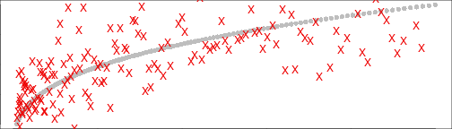
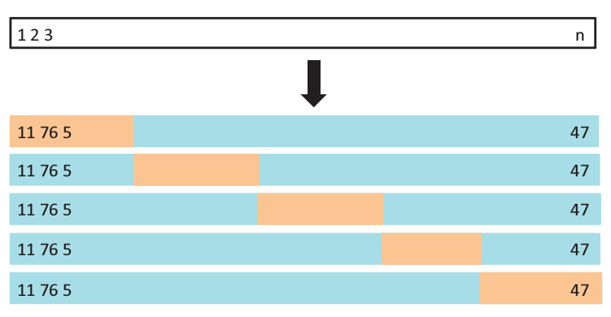

Predictive Analytics in R
David O'Brien dunder.chief@gmail.com
August 25, 2015
What is Predictive Modeling?
Given a set of predictor variables (X)
Predict an outcome (Y)
A simplified definition.
- may not have an outcome Y
- may want to know reasons behind why X predicts Y
Our Flower!

What kind of iris is this?

Our guess:
| Sepal Length [X1] | Sepal Width [X2] | Petal Length [X3] | Petal Width [X4] | Species [Y] |
|---|---|---|---|---|
| 6.5 | 2.8 | 4.6 | 1.5 | ??? |
| Sepal Length [X1] | Sepal Width [X2] | Petal Length [X3] | Petal Width [X4] | Species [Y] |
|---|---|---|---|---|
| 5.1 | 3.5 | 1.4 | 0.2 | setosa |
| 4.9 | 3.0 | 1.4 | 0.2 | setosa |
| 4.7 | 3.2 | 1.3 | 0.2 | setosa |
| 7.0 | 3.2 | 4.7 | 1.4 | versicolor |
| 6.4 | 3.2 | 4.5 | 1.5 | versicolor |
| 6.9 | 3.1 | 4.9 | 1.5 | versicolor |
| 6.3 | 3.3 | 6.0 | 2.5 | virginica |
| 5.8 | 2.7 | 5.1 | 1.9 | virginica |
| 7.1 | 3.0 | 5.9 | 2.1 | virginica |
| setosa | versicolor | virginica | |
|---|---|---|---|
| Probablity | 0 | 0.995 | 0.005 |
Versicolor!
Implementation in R:
library(MASS)
trainset <- iris[-our_flower, ]
fit.lda <- lda(Species ~ ., data=trainset, prior=c(1/3, 1/3, 1/3))
pred <- predict(fit.lda, newdata=iris[our_flower, ])
round(pred$posterior, 3)
## setosa versicolor virginica
## 55 0 0.995 0.005
Since most of the predictive modeling packages are written by different people, they often have different option names/ input structure
predict(fitObject, type = ???)
| Model | Probability |
|---|---|
| gbm | "response" |
| mda | "posterior" |
| rpart | "prob" |
| Weka | "probability" |
| LogitBoost | "raw" |
| lda | None needed |
There is some standardization, such as the predict function to test our model on a new datasets
Typical flow for trying a new algorithm:
- Find the package(s) and install
- Find training function
- Split data into multiple train/test sets
- Set up your data to fit the training model
- Formula
- Matrix
- Data.frame
- X, Y as seperate objects
- Pre-process data
- Look up tuning params
- Write loops for model tuning / repeated cross-validation
- Analyze results
Typical flow for base r
Data Inputs:
formula, data.frame, matrix, or seperate X & Y objects
in caret all of this is contained in less than 5 lines of code
Caret
Website: https://topepo.github.io/caret/index.html
List of Models: https://topepo.github.io/caret/modelList.html
options(stringsAsFactors=FALSE)
models <- read.csv('../caret_models.csv')
table(models$Type)
##
## Classification Dual Use Regression
## 74 73 45
class_models <- subset(models, Type %in% c('Classification', 'Dual Use'),
select='method.Argument')
Wrapper for 192 models
91 Machine learning packages
With all these dependencies, probably a few thousand packages in total???
Can add your own
Train lots of models at once
library(caret); library(doMC); registerDoMC(7)
myFits <- foreach(this.model = class_models) %do% {
train(Species ~ .,
data=iris,
method=this.model,
preProcess='pca',
trControl=trainControl(method='repeatedcv', number=5, repeats=7),
tuneLength=5)
}
This will: 1. preprocess with PCA,
train with 5-fold cross validation, 7 repeats in parallel
will also optimize tuning parameters
Took XX minutes to run
Not all models worked because we have 3 categories


Machine Learning Basics
library(caret)
## Loading required package: lattice
## Loading required package: ggplot2
trainIndex <- createDataPartition(iris$Species, p = .8,
list = FALSE,
times = 1)
irisTrain <- iris[ trainIndex, ]
irisTest <- iris[-trainIndex, ]

Why split data? To avoid overfitting our results
Example: This is a good example of how caret make you do things the right way. I would normally just select random rows instead of breaking down into equal classes.
Cross-validation: Avoid overfitting
\[y = x^3\]
y <- seq(2, 10, by=.05)
x <- seq(2, 10, by=.05)^3
set.seed(1)
error <- rnorm(length(x), sd=2)
dat <- data.frame(X = x + error, Y = y + error)

Create data where we know the optimal fit
Add some randomness to it
Tuning polynomials
set.seed(100)
trainIndex <- createDataPartition(y=dat$Y, p=0.5, list=FALSE)
training <- dat[trainIndex, ]
test <- dat[-trainIndex, ]
fit <- lm(Y ~ poly(X, 3, raw=TRUE), data=training)
pred.training <- predict(fit, newdata=training)
pred.test <- predict(fit, newdata=test)
\[y=\theta_3x^3 + \theta_2x^2 + \theta_1x + \theta_0\]
Our true fit is: \(\theta_3=1\), \(\{\theta_2, \theta_1, \theta_0\}=0\)
We always fit on the training set
But we will compare analyzing this tuning parameter on both the training & test sets
In-sample (training set) | Out-of-sample (test set)
Error only decreases in training set
At polynomial = 50. Our model no longer works on new data
training error will always go down as the model gets more flexible
but we want to know how well it does on new data
test set is a better reflection of this
Parsimony / Occam's Razor
The simplest model is usually the best.
Only use least number of parameters that are necessary.
Data Splitting
- Training set [70%]:
Train a model 100x with different tuning parameters - Cross-validation set [15%]:
Evaluate these 100 models - Test set [15%]:
Use final model (only one!) to evaluate your the accuracy of your analysis
Most ML models have tuning parameters & we need to optimize these useing an out of sample dataset
This is our out of sample set for evaluating these params
In order to avoid overfitting due to tuning param selection, need a fresh test set example of this is on prev slide
30% of data on testing?!?

k-fold cross-validation

in this case we have 5-fold cross-validation
Average the error for all 5 of these to pick the best model
caret: Basic Syntax
train(Species ~ .,
data=iris,
method='gbm',
preProcess='knnImpute',
trControl=trainControl(method='repeatedcv', number=5, repeats=7),
tuneLength=5)

train():
- method: our machine learning algorithm (select from 192)
- preProcess:
| Train_Options |
|---|
| BoxCox |
| YeoJohnson |
| expoTrans |
| center |
| scale |
| range |
| knnImpute |
| bagImpute |
| medianImpute |
| pca |
| ica |
| spatialSign |
trainControl():
out <- data.frame(Resampling_Method=c("boot", "boot632", "cv", "repeatedcv", "LOOCV", "LGOCV", "none", "oob", "adaptive_cv", "adaptive_boot", "adaptive_LGOCV"))
kable(out, format='html')
| Resampling_Method |
|---|
| boot |
| boot632 |
| cv |
| repeatedcv |
| LOOCV |
| LGOCV |
| none |
| oob |
| adaptive_cv |
| adaptive_boot |
| adaptive_LGOCV |
Adding custom tuning params
gbmGrid <- expand.grid(interaction.depth = c(1, 5, 9),
n.trees = (1:30)*50,
shrinkage = 0.1,
n.minobsinnode = 20)
head(gbmGrid)
## interaction.depth n.trees shrinkage n.minobsinnode
## 1 1 50 0.1 20
## 2 5 50 0.1 20
## 3 9 50 0.1 20
## 4 1 100 0.1 20
## 5 5 100 0.1 20
## 6 9 100 0.1 20
train(Species ~ .,
data=iris,
method='gbm',
preProcess='pca',
trControl=trainControl(method='repeatedcv', number=5, repeats=7),
tuneGrid = gbmGrid)
Adaptive Resampling
Speed up the optimazion process
fitControl2 <- trainControl(method = "adaptive_cv",
number = 10,
repeats = 5,
## Estimate class probabilities
classProbs = TRUE,
## Evaluate performance using
## the following function
summaryFunction = twoClassSummary,
## Adaptive resampling information:
adaptive = list(min = 10,
alpha = 0.05,
method = "gls",
complete = TRUE))
What else can caret do?
Data Splitting
Pre-processing
Feature Selection
Model tuning / Resampling
Variable Importance
Easier to use than base R
Prevents common mistakes
Data Splitting (Time Series)

library(quantmod)
gold <- getSymbols('GLD', src='yahoo', from='1970-01-01', auto.assign=FALSE)
Time series can't be split randomly because the slice we're predicting depends on the previous samples.
Time Series
library(caret)
slices <- createTimeSlices(Cl(gold), initialWindow=1000,
fixedWindow=TRUE, horizon=500, skip=500)
str(slices)
## List of 2
## $ train:List of 3
## ..$ Training0001: int [1:1000] 1 2 3 4 5 6 7 8 9 10 ...
## ..$ Training0502: int [1:1000] 502 503 504 505 506 507 508 509 510 511 ...
## ..$ Training1003: int [1:1000] 1003 1004 1005 1006 1007 1008 1009 1010 1011 1012 ...
## $ test :List of 3
## ..$ Testing0001: int [1:500] 1001 1002 1003 1004 1005 1006 1007 1008 1009 1010 ...
## ..$ Testing0502: int [1:500] 1502 1503 1504 1505 1506 1507 1508 1509 1510 1511 ...
## ..$ Testing1003: int [1:500] 2003 2004 2005 2006 2007 2008 2009 2010 2011 2012 ...
Data Splitting | Class imbalances
set.seed(2969)
imbal_train <- twoClassSim(10000, intercept = -20, linearVars = 20)
imbal_test <- twoClassSim(10000, intercept = -20, linearVars = 20)
table(imbal_train$Class)
##
## Class1 Class2
## 9411 589
Pre-processing
Other functions
dummyVars()
nearZeroVar()
findCorrelation()
findLinearCombos()
classDist()
The list goes into
- Center and scale so mean is 0 for all predictors with a STDEV of 1
- Dimensionality reduction
why caret: Makes you do it right by default, I kept doing it wrong at first. Applies same parameters to the test set.
Go through example...
Imputation???
Variable Importance
varImp()
What A way to rank our predictors by how important they are to the model
Why Help us remove predictors we don't want. And give us an idea about what causes our outcome variable
How Examples
Feature Selection

What is feature selection? this is a subset of the features that we will need
Why we need it: Can be challenging with many predictors & we can't try every possible model
How to do it: method 1, 2, 3, etc.....
Recursive Feature Elimination:
rfe()
rfeControl()
# <img src='assets/img/RFE.png'>
Genetic Algorithms:
gafs()
## Error in gafs.default(): promise already under evaluation: recursive default argument reference or earlier problems?
gafsControl()
## $functions
## $functions$summary
## function (data, lev = NULL, model = NULL)
## {
## if (is.character(data$obs))
## data$obs <- factor(data$obs, levels = lev)
## postResample(data[, "pred"], data[, "obs"])
## }
## <environment: namespace:caret>
##
## $functions$fit
## function (x, y, first, last, ...)
## train(x, y, ...)
## <environment: namespace:caret>
##
## $functions$pred
## function (object, x)
## {
## tmp <- predict(object, x)
## if (object$modelType == "Classification" & !is.null(object$modelInfo$prob)) {
## out <- cbind(data.frame(pred = tmp), as.data.frame(predict(object,
## x, type = "prob")))
## }
## else out <- tmp
## out
## }
## <environment: namespace:caret>
##
## $functions$rank
## function (object, x, y)
## {
## vimp <- varImp(object, scale = FALSE)$importance
## if (object$modelType == "Regression") {
## vimp <- vimp[order(vimp[, 1], decreasing = TRUE), , drop = FALSE]
## }
## else {
## if (all(levels(y) %in% colnames(vimp))) {
## avImp <- apply(vimp[, levels(y), drop = TRUE], 1,
## mean)
## vimp$Overall <- avImp
## }
## }
## vimp$var <- rownames(vimp)
## vimp
## }
## <environment: namespace:caret>
##
## $functions$selectSize
## function (x, metric, maximize)
## {
## best <- if (maximize)
## which.max(x[, metric])
## else which.min(x[, metric])
## min(x[best, "Variables"])
## }
## <environment: namespace:caret>
##
## $functions$selectVar
## function (y, size)
## {
## finalImp <- ddply(y[, c("Overall", "var")], .(var), function(x) mean(x$Overall,
## na.rm = TRUE))
## names(finalImp)[2] <- "Overall"
## finalImp <- finalImp[order(finalImp$Overall, decreasing = TRUE),
## ]
## as.character(finalImp$var[1:size])
## }
## <environment: namespace:caret>
##
##
## $method
## [1] "repeatedcv"
##
## $metric
## NULL
##
## $maximize
## NULL
##
## $number
## [1] 10
##
## $repeats
## [1] 1
##
## $returnResamp
## [1] "final"
##
## $verbose
## [1] FALSE
##
## $p
## [1] 0.75
##
## $index
## NULL
##
## $indexOut
## NULL
##
## $seeds
## NULL
##
## $holdout
## [1] 0
##
## $genParallel
## [1] FALSE
##
## $allowParallel
## [1] TRUE
Univariate Filters:
gafs()
## Error in gafs.default(): promise already under evaluation: recursive default argument reference or earlier problems?
gafsControl()
## $functions
## $functions$summary
## function (data, lev = NULL, model = NULL)
## {
## if (is.character(data$obs))
## data$obs <- factor(data$obs, levels = lev)
## postResample(data[, "pred"], data[, "obs"])
## }
## <environment: namespace:caret>
##
## $functions$fit
## function (x, y, first, last, ...)
## train(x, y, ...)
## <environment: namespace:caret>
##
## $functions$pred
## function (object, x)
## {
## tmp <- predict(object, x)
## if (object$modelType == "Classification" & !is.null(object$modelInfo$prob)) {
## out <- cbind(data.frame(pred = tmp), as.data.frame(predict(object,
## x, type = "prob")))
## }
## else out <- tmp
## out
## }
## <environment: namespace:caret>
##
## $functions$rank
## function (object, x, y)
## {
## vimp <- varImp(object, scale = FALSE)$importance
## if (object$modelType == "Regression") {
## vimp <- vimp[order(vimp[, 1], decreasing = TRUE), , drop = FALSE]
## }
## else {
## if (all(levels(y) %in% colnames(vimp))) {
## avImp <- apply(vimp[, levels(y), drop = TRUE], 1,
## mean)
## vimp$Overall <- avImp
## }
## }
## vimp$var <- rownames(vimp)
## vimp
## }
## <environment: namespace:caret>
##
## $functions$selectSize
## function (x, metric, maximize)
## {
## best <- if (maximize)
## which.max(x[, metric])
## else which.min(x[, metric])
## min(x[best, "Variables"])
## }
## <environment: namespace:caret>
##
## $functions$selectVar
## function (y, size)
## {
## finalImp <- ddply(y[, c("Overall", "var")], .(var), function(x) mean(x$Overall,
## na.rm = TRUE))
## names(finalImp)[2] <- "Overall"
## finalImp <- finalImp[order(finalImp$Overall, decreasing = TRUE),
## ]
## as.character(finalImp$var[1:size])
## }
## <environment: namespace:caret>
##
##
## $method
## [1] "repeatedcv"
##
## $metric
## NULL
##
## $maximize
## NULL
##
## $number
## [1] 10
##
## $repeats
## [1] 1
##
## $returnResamp
## [1] "final"
##
## $verbose
## [1] FALSE
##
## $p
## [1] 0.75
##
## $index
## NULL
##
## $indexOut
## NULL
##
## $seeds
## NULL
##
## $holdout
## [1] 0
##
## $genParallel
## [1] FALSE
##
## $allowParallel
## [1] TRUE
Simalated Annealing:
safs()
## Error in safs.default(): promise already under evaluation: recursive default argument reference or earlier problems?
safsControl()
## $functions
## $functions$summary
## function (data, lev = NULL, model = NULL)
## {
## if (is.character(data$obs))
## data$obs <- factor(data$obs, levels = lev)
## postResample(data[, "pred"], data[, "obs"])
## }
## <environment: namespace:caret>
##
## $functions$fit
## function (x, y, first, last, ...)
## train(x, y, ...)
## <environment: namespace:caret>
##
## $functions$pred
## function (object, x)
## {
## tmp <- predict(object, x)
## if (object$modelType == "Classification" & !is.null(object$modelInfo$prob)) {
## out <- cbind(data.frame(pred = tmp), as.data.frame(predict(object,
## x, type = "prob")))
## }
## else out <- tmp
## out
## }
## <environment: namespace:caret>
##
## $functions$rank
## function (object, x, y)
## {
## vimp <- varImp(object, scale = FALSE)$importance
## if (object$modelType == "Regression") {
## vimp <- vimp[order(vimp[, 1], decreasing = TRUE), , drop = FALSE]
## }
## else {
## if (all(levels(y) %in% colnames(vimp))) {
## avImp <- apply(vimp[, levels(y), drop = TRUE], 1,
## mean)
## vimp$Overall <- avImp
## }
## }
## vimp$var <- rownames(vimp)
## vimp
## }
## <environment: namespace:caret>
##
## $functions$selectSize
## function (x, metric, maximize)
## {
## best <- if (maximize)
## which.max(x[, metric])
## else which.min(x[, metric])
## min(x[best, "Variables"])
## }
## <environment: namespace:caret>
##
## $functions$selectVar
## function (y, size)
## {
## finalImp <- ddply(y[, c("Overall", "var")], .(var), function(x) mean(x$Overall,
## na.rm = TRUE))
## names(finalImp)[2] <- "Overall"
## finalImp <- finalImp[order(finalImp$Overall, decreasing = TRUE),
## ]
## as.character(finalImp$var[1:size])
## }
## <environment: namespace:caret>
##
##
## $method
## [1] "repeatedcv"
##
## $metric
## NULL
##
## $maximize
## NULL
##
## $number
## [1] 10
##
## $repeats
## [1] 1
##
## $returnResamp
## [1] "final"
##
## $verbose
## [1] FALSE
##
## $p
## [1] 0.75
##
## $index
## NULL
##
## $indexOut
## NULL
##
## $seeds
## NULL
##
## $holdout
## [1] 0
##
## $improve
## [1] Inf
##
## $allowParallel
## [1] TRUE
h2o package:
Open Source Java library
Runs Single model over multiple nodes
Hadoop & Spark
EC2 / Azure / Compute ENgine
R, Scala, Python, Web Browser, REST API
Run locally
Most of machine learning is subject to 'riduculously parallelization' because of optimization steps during training
But for really large data where params are already estimated, you may want to parallelize a siCan be challenging with many predictors & we can'ngle model.
Models available with H2O
- K-Means
- GLM
- DRF
- Naïve Bayes
- PCA
- GBM
- Deep Learning
h2o.deeplearning(
x, y, training_frame, model_id = "",
overwrite_with_best_model,
validation_frame, checkpoint,
autoencoder = FALSE,
use_all_factor_levels = TRUE,
activation = c("Rectifier", "Tanh", "TanhWithDropout",
"RectifierWithDropout", "Maxout", "MaxoutWithDropout"),
hidden = c(200, 200),
epochs = 10,
train_samples_per_iteration = -2,
seed,
adaptive_rate=TRUE,
rho = 0.99,
epsilon = 1e-08,
rate = 0.005,
rate_annealing = 1e-06,
rate_decay = 1,
momentum_start=0,
momentum_ramp = 1e+06,
momentum_stable = 0,
nesterov_accelerated_gradient = TRUE,
input_dropout_ratio=0,
hidden_dropout_ratios,
l1 = 0, l2 = 0, max_w2 = Inf,
initial_weight_distribution=c("UniformAdaptive",
"Uniform","Normal"),
initial_weight_scale = 1,
loss = c("Automatic", "CrossEntropy", "MeanSquare",
"Absolute", "Huber"),
distribution = c("AUTO", "gaussian", "bernoulli",
"multinomial", "poisson", "gamma",
"tweedie", "laplace","huber"),
tweedie_power = 1.5,
score_interval = 5,
score_training_samples,
score_validation_samples,
score_duty_cycle,
classification_stop,
regression_stop,
quiet_mode,
max_confusion_matrix_size,
max_hit_ratio_k,
balance_classes = FALSE,
class_sampling_factors,
max_after_balance_size,
score_validation_sampling,
diagnostics,
variable_importances,
fast_mode,
ignore_const_cols,
force_load_balance,
replicate_training_data,
single_node_mode,
shuffle_training_data,
sparse, col_major,
average_activation,
sparsity_beta,
max_categorical_features,
reproducible = FALSE,
export_weights_and_biases = FALSE,
offset_column = NULL,
weights_column = NULL,
nfolds = 0,
fold_column = NULL,
fold_assignment = c("AUTO", "Random", "Modulo"),
keep_cross_validation_predictions = FALSE, ...)
Use case
library(h2o)
# Initialize h2o with nthreads (default is 2)
localH2O <- h2o.init(nthreads = 4)
# Convert our datasets
iris.train.h2o <- as.h2o(iris.train, localH2O)
iris.test.h2o <- as.h2o(iris.test, localH2O)
# Run the model
model = h2o.deeplearning(x = colnames(iris)[-ncol(iris)],
y = "Species",
training_frame = iris.train.h2o,
activation = "Tanh",
hidden = c(10, 10, 10),
epochs = 10000)
# Check performance of test set
performance = h2o.performance(model = model, data=iris.test.h2o)
GPU computing for machine learning in R
Packages:
- gputools
- rpud
A GPU can have 1000 cores
All depend on CUDA infastructure (check this!)
OpenMP????
gputools
gpuGLM()
gpuLM()
gpuHclust(gpuDist())
Many more mathmatic functions
rpud
http://www.r-tutor.com/gpu-computing
rpuHclust()
rvbm()
rhierLinearModel()
rpusvm()
rhierLinearModel() = Hierarchical Linear Model rvbm() = Bayesian Classification with Gaussian Process
Places to Learn all about machine learning
- Andrew Ng, Coursera/Stanford https://www.coursera.org/learn/machine-learning
- Trevor Hastie, Rob Tibirashi Statistical Learning http://online.stanford.edu/course/statistical-learning-winter-2014
- JHU Practical Machine Learning https://www.coursera.org/course/predmachlearn
- Georgia Tech / Udacity M.S. in comp. sci.
http://www.omscs.gatech.edu/
References